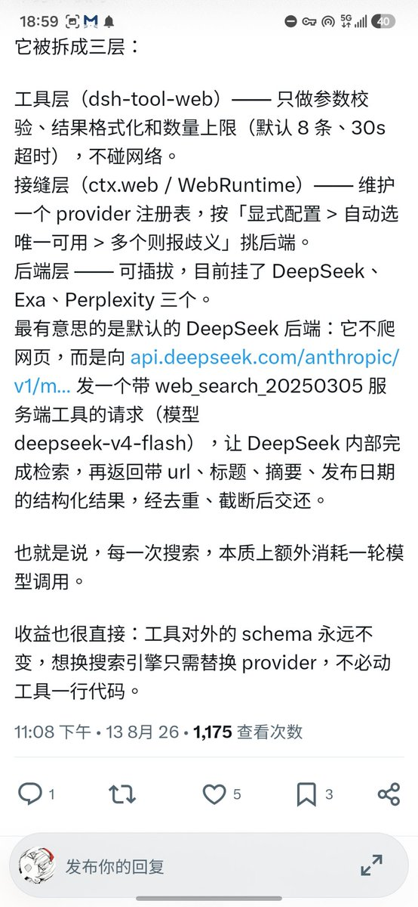
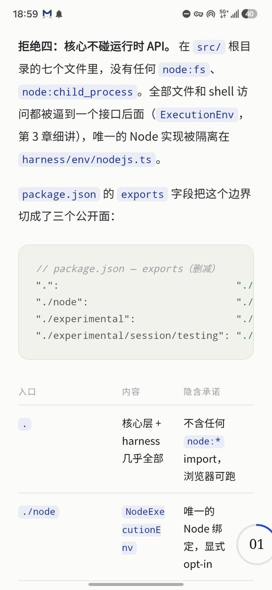

MilkSU⭐🐈⬛
@MilkSU_Official
@QuantumTransf 好喜欢 yuu 老师的分析，每天刷推能刷到这样的干货太幸福了


Yuu💖
@QuantumTransf
工具层不直接碰外部环境，而是通过一组被封装的能力层（也即原推提到的接缝层）去访问
这和 pi agent 的架构是相同的，不过 dsh 做的更深，访问外部环境的每种能力应当是受限的，且可以被独立于工具抽象重写 / 替换的，因为是一组没有耦合的 plugin
我喜欢这个解耦的 story https://t.co/GvPLRf5nEv https://t.co/mZkZWJZrzg